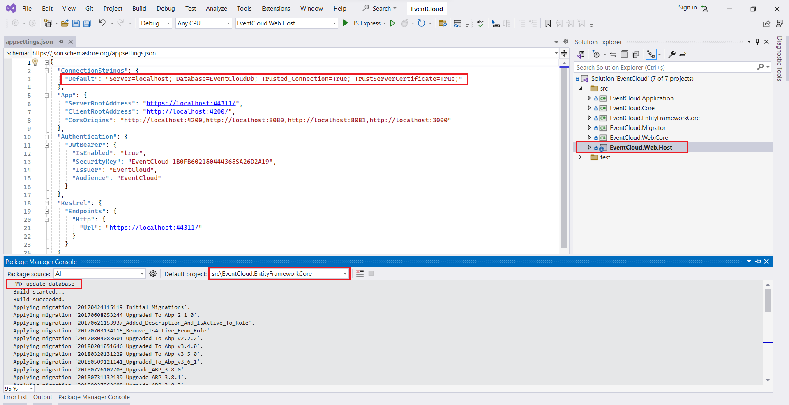
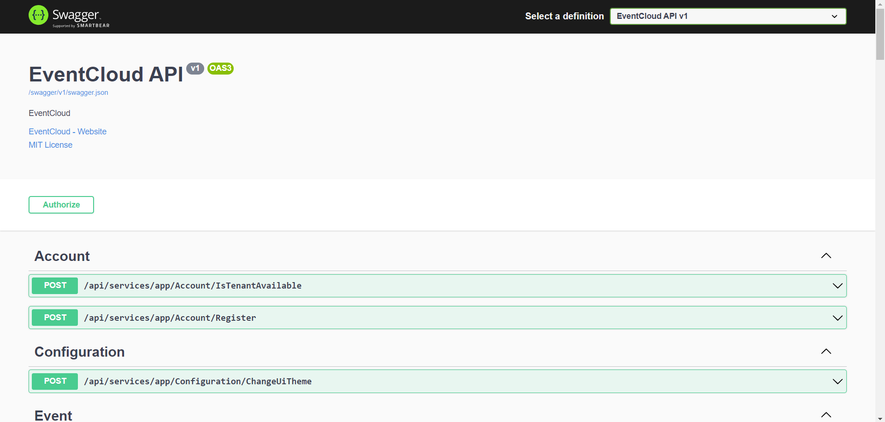
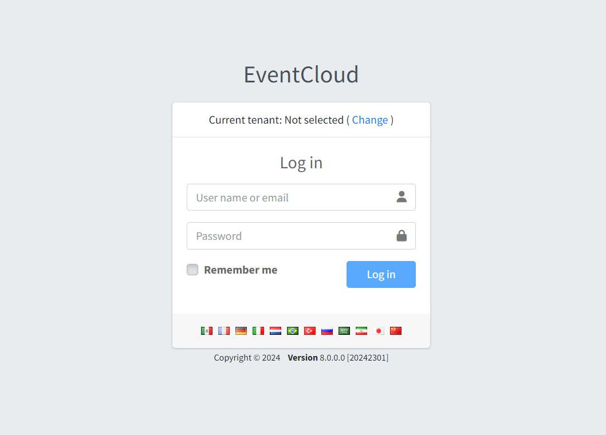
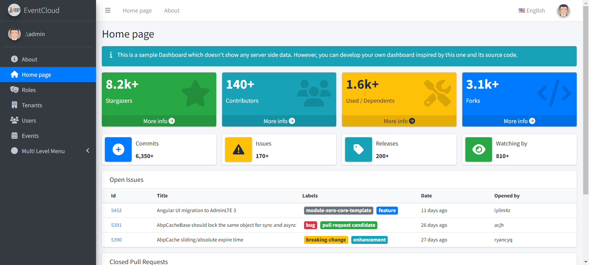
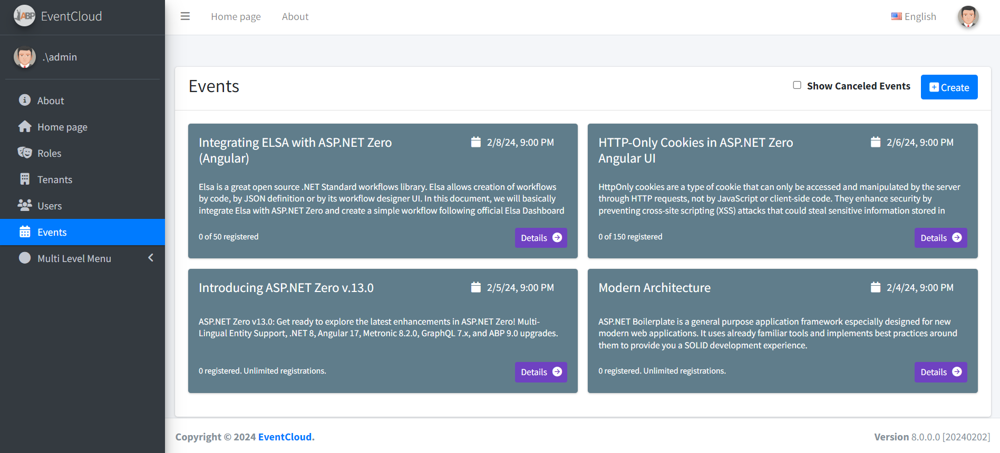
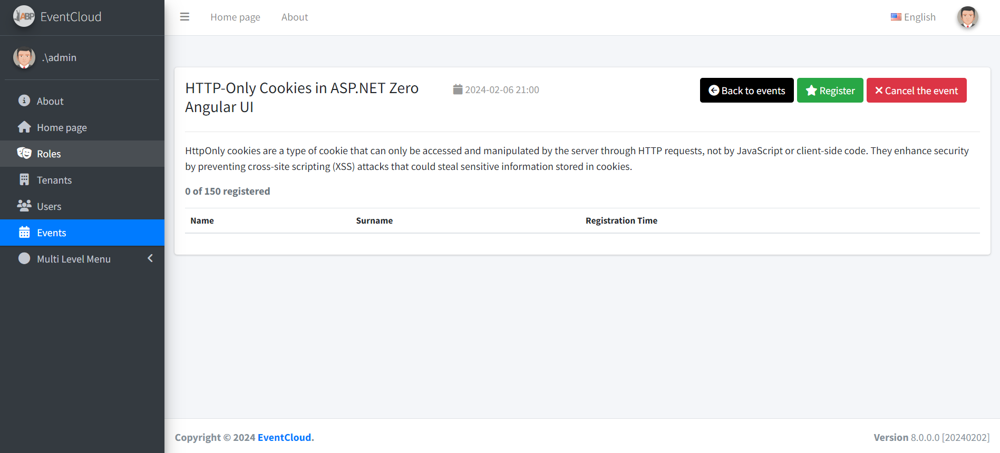
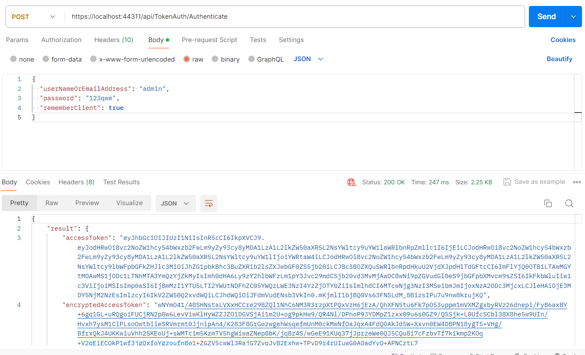
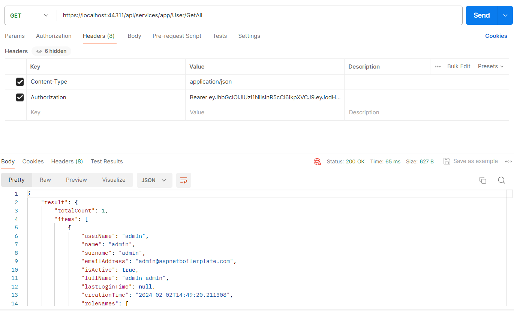

In this article, we will see a SaaS (multi-tenant) application developed using the following frameworks:
ASP.NET Boilerplate provides templates to make a project startup easier. We create the startup template from https://aspnetboilerplate.com/Templates
I selected ASP.NET Core 2.x, Angular and checked "Include login, register, user, role and tenant management pages". It creates a ready and working solution for us including a login page, navigation and a bootstrap based layout. After download and open the solution with Visual Studio 2017+, we see a layered solution structure including a unit test project.
First, we select EventCloud.Host as startup project. Solution comes with Entity Framework Core Code-First Migrations. So, (after restoring nuget packages) we open the Package Manager Console (PMC) and run Update-Database command to create the database.
Package Manager Console's Default project should be EventCloud.EntityFrameworkCore (since it contains the migrations). This command creates EventCloud database in local SQL Server (you can change connection string in appsettings.json file).

First I'm running EventCloud.Host project. We will see the following screen:

We will use Angular-CLI to start Angular UI. Here is the steps to start Angular UI:
yarn command to install packagesnpm start to run applicationThen we will see the following login page when you browse http://localhost:4200 :

We can enter Default as tenancy name, admin as user name and 123qwe as password to login.
After login, we see the basic bootstrap based Admin BSB Material Design layout.

This is a localized UI with a dynamic menu. Angular layout, routing and basic infrastructure are properly working. I got this project as a base for the event cloud project.
In this article, I will show key parts of the project and explain it. So, please download the sample project, open in Visual Studio 2017+ and run migrations just like above before reading rest of the article (Be sure that there is no database named EventCloud before running the migrations). I will follow some DDD (Domain Driven Design) techniques to create domain (business) layer and application layer.
Event Cloud is a free SaaS (multi-tenant) application. We can create a tenant which has its own events, users, roles... There are some simple business rules applied while creating, canceling and registering to an event.
So, let's start to investigate the source code.
Entities are parts of our domain layer and located under EventCloud.Core project. ASP.NET Boilerplate startup template comes with Tenant, User, Role ... entities which are common for most applications. We can customize them based on our needs. Surely, we can add our application specific entities.
The fundamental entity of event cloud project is the Event entity.
[Table("AppEvents")]
public class Event : FullAuditedEntity<Guid>, IMustHaveTenant
{
public const int MaxTitleLength = 128;
public const int MaxDescriptionLength = 2048;
public virtual int TenantId { get; set; }
[Required]
[StringLength(MaxTitleLength)]
public virtual string Title { get; protected set; }
[StringLength(MaxDescriptionLength)]
public virtual string Description { get; protected set; }
public virtual DateTime Date { get; protected set; }
public virtual bool IsCancelled { get; protected set; }
/// <summary>
/// Gets or sets the maximum registration count.
/// 0: Unlimited.
/// </summary>
[Range(0, int.MaxValue)]
public virtual int MaxRegistrationCount { get; protected set; }
[ForeignKey("EventId")]
public virtual ICollection<EventRegistration> Registrations { get; protected set; }
/// <summary>
/// We don't make constructor public and forcing to create events using <see cref="Create"/> method.
/// But constructor can not be private since it's used by EntityFramework.
/// Thats why we did it protected.
/// </summary>
protected Event()
{
}
public static Event Create(int tenantId, string title, DateTime date, string description = null, int maxRegistrationCount = 0)
{
var @event = new Event
{
Id = Guid.NewGuid(),
TenantId = tenantId,
Title = title,
Description = description,
MaxRegistrationCount = maxRegistrationCount
};
@event.SetDate(date);
@event.Registrations = new Collection<EventRegistration>();
return @event;
}
public bool IsInPast()
{
return Date < Clock.Now;
}
public bool IsAllowedCancellationTimeEnded()
{
return Date.Subtract(Clock.Now).TotalHours <= 2.0; //2 hours can be defined as Event property and determined per event
}
public void ChangeDate(DateTime date)
{
if (date == Date)
{
return;
}
SetDate(date);
DomainEvents.EventBus.Trigger(new EventDateChangedEvent(this));
}
internal void Cancel()
{
AssertNotInPast();
IsCancelled = true;
}
private void SetDate(DateTime date)
{
AssertNotCancelled();
if (date < Clock.Now)
{
throw new UserFriendlyException("Can not set an event's date in the past!");
}
if (date <= Clock.Now.AddHours(3)) //3 can be configurable per tenant
{
throw new UserFriendlyException("Should set an event's date 3 hours before at least!");
}
Date = date;
DomainEvents.EventBus.Trigger(new EventDateChangedEvent(this));
}
private void AssertNotInPast()
{
if (IsInPast())
{
throw new UserFriendlyException("This event was in the past");
}
}
private void AssertNotCancelled()
{
if (IsCancelled)
{
throw new UserFriendlyException("This event is canceled!");
}
}
}
Event entity has not just get/set properties. Actually, it has not public setters, setters are protected. It has some domain logic. All properties must be changed by the Event entity itself to ensure domain logic is executed.
Event entity's constructor is also protected. So, the only way to create an Event is the Event.Create method (They can be private normally, but private setters don't work well with Entity Framework Core since Entity Framework Core can not set privates when retrieving an entity from database).
Event implements, IMustHaveTenant interface. This is an interface of ASP.NET Boilerplate (ABP) framework and ensures that this entity is per tenant. This is needed for multi-tenancy. Thus, different tenants will have different events and can not see each other's events. ABP automatically filters entities of current tenant.
Event class inherits from FullAuditedEntity which contains creation, modification and deletion audit columns. FullAuditedEntity also implements ISoftDelete, so events can not be deleted from database. They are marked as deleted when you delete it. ABP automatically filters (hides) deleted entities when you query database.
In DDD, entities have domain (business) logic. We have some simple business rules those can be understood easily when you check the entity.
Second entity of our application is EventRegistration
[Table("AppEventRegistrations")]
public class EventRegistration : CreationAuditedEntity, IMustHaveTenant
{
public int TenantId { get; set; }
[ForeignKey("EventId")]
public virtual Event Event { get; protected set; }
public virtual Guid EventId { get; protected set; }
[ForeignKey("UserId")]
public virtual User User { get; protected set; }
public virtual long UserId { get; protected set; }
/// <summary>
/// We don't make constructor public and forcing to create registrations using <see cref="CreateAsync"/> method.
/// But constructor can not be private since it's used by EntityFramework.
/// Thats why we did it protected.
/// </summary>
protected EventRegistration()
{
}
public static async Task<EventRegistration> CreateAsync(Event @event, User user, IEventRegistrationPolicy registrationPolicy)
{
await registrationPolicy.CheckRegistrationAttemptAsync(@event, user);
return new EventRegistration
{
TenantId = @event.TenantId,
EventId = @event.Id,
Event = @event,
UserId = @user.Id,
User = user
};
}
public async Task CancelAsync(IRepository<EventRegistration> repository)
{
if (repository == null) { throw new ArgumentNullException("repository"); }
if (Event.IsInPast())
{
throw new UserFriendlyException("Can not cancel event which is in the past!");
}
if (Event.IsAllowedCancellationTimeEnded())
{
throw new UserFriendlyException("It's too late to cancel your registration!");
}
await repository.DeleteAsync(this);
}
}
As similar to Event, we have a static create method. The only way of creating a new EventRegistration is this CreateAsync method. It gets an event, user and a registration policy. It checks if given user can register to the event using registrationPolicy.CheckRegistrationAttemptAsync method. This method throws exception if given user can not register to given event. With such a design, we ensure that all business rules are applied while creating a registration. There is no way of creating a registration without using registration policy.
See Entity documentation for more information on entities.
EventRegistrationPolicy class is defined as shown below:
public class EventRegistrationPolicy : IEventRegistrationPolicy
{
private readonly IRepository<EventRegistration> _eventRegistrationRepository;
private readonly ISettingManager _settingManager;
public EventRegistrationPolicy(
IRepository<EventRegistration> eventRegistrationRepository,
ISettingManager settingManager
)
{
_eventRegistrationRepository = eventRegistrationRepository;
_settingManager = settingManager;
}
public async Task CheckRegistrationAttemptAsync(Event @event, User user)
{
if (@event == null) { throw new ArgumentNullException("event"); }
if (user == null) { throw new ArgumentNullException("user"); }
CheckEventDate(@event);
await CheckEventRegistrationFrequencyAsync(user);
}
private static void CheckEventDate(Event @event)
{
if (@event.IsInPast())
{
throw new UserFriendlyException("Can not register event in the past!");
}
}
private async Task CheckEventRegistrationFrequencyAsync(User user)
{
var oneMonthAgo = Clock.Now.AddDays(-30);
var maxAllowedEventRegistrationCountInLast30DaysPerUser = await _settingManager.GetSettingValueAsync<int>(AppSettingNames.MaxAllowedEventRegistrationCountInLast30DaysPerUser);
if (maxAllowedEventRegistrationCountInLast30DaysPerUser > 0)
{
var registrationCountInLast30Days = await _eventRegistrationRepository.CountAsync(r => r.UserId == user.Id && r.CreationTime >= oneMonthAgo);
if (registrationCountInLast30Days > maxAllowedEventRegistrationCountInLast30DaysPerUser)
{
throw new UserFriendlyException(string.Format("Can not register to more than {0}", maxAllowedEventRegistrationCountInLast30DaysPerUser));
}
}
}
}
This is an important part of our domain. We have two rules while creating an event registration:
EventManager implements business (domain) logic for events. All Event operations should be executed using this class. It's defined as shown below:
public class EventManager : IEventManager
{
public IEventBus EventBus { get; set; }
private readonly IEventRegistrationPolicy _registrationPolicy;
private readonly IRepository<EventRegistration> _eventRegistrationRepository;
private readonly IRepository<Event, Guid> _eventRepository;
public EventManager(
IEventRegistrationPolicy registrationPolicy,
IRepository<EventRegistration> eventRegistrationRepository,
IRepository<Event, Guid> eventRepository)
{
_registrationPolicy = registrationPolicy;
_eventRegistrationRepository = eventRegistrationRepository;
_eventRepository = eventRepository;
EventBus = NullEventBus.Instance;
}
public async Task<Event> GetAsync(Guid id)
{
var @event = await _eventRepository.FirstOrDefaultAsync(id);
if (@event == null)
{
throw new UserFriendlyException("Could not found the event, maybe it's deleted!");
}
return @event;
}
public async Task CreateAsync(Event @event)
{
await _eventRepository.InsertAsync(@event);
}
public void Cancel(Event @event)
{
@event.Cancel();
EventBus.Trigger(new EventCancelledEvent(@event));
}
public async Task<EventRegistration> RegisterAsync(Event @event, User user)
{
return await _eventRegistrationRepository.InsertAsync(
await EventRegistration.CreateAsync(@event, user, _registrationPolicy)
);
}
public async Task CancelRegistrationAsync(Event @event, User user)
{
var registration = await _eventRegistrationRepository.FirstOrDefaultAsync(r => r.EventId == @event.Id && r.UserId == user.Id);
if (registration == null)
{
//No need to cancel since there is no such a registration
return;
}
await registration.CancelAsync(_eventRegistrationRepository);
}
public async Task<IReadOnlyList<User>> GetRegisteredUsersAsync(Event @event)
{
return await _eventRegistrationRepository
.GetAll()
.Include(registration => registration.User)
.Where(registration => registration.EventId == @event.Id)
.Select(registration => registration.User)
.ToListAsync();
}
}
It performs domain logic and triggers needed events.
See domain services documentation for more information on domain services.
We may want to define and trigger some domain specific events on some state changes in our application. I defined 2 domain specific events:
EventManager.Cancel method.Event.ChangeDate method.We handle these events and notify related users about these changes. Also, I handle EntityCreatedEventDate<Event> (which is a pre-defined ABP event and triggered automatically).
To handle an event, we should define an event handler class. I defined EventUserEmailer to send emails to users when needed:
public class EventUserEmailer :
IEventHandler<EntityCreatedEventData<Event>>,
IEventHandler<EventDateChangedEvent>,
IEventHandler<EventCancelledEvent>,
ITransientDependency
{
public ILogger Logger { get; set; }
private readonly IEventManager _eventManager;
private readonly UserManager _userManager;
public EventUserEmailer(
UserManager userManager,
IEventManager eventManager)
{
_userManager = userManager;
_eventManager = eventManager;
Logger = NullLogger.Instance;
}
[UnitOfWork]
public virtual void HandleEvent(EntityCreatedEventData<Event> eventData)
{
//TODO: Send email to all tenant users as a notification
var users = _userManager
.Users
.Where(u => u.TenantId == eventData.Entity.TenantId)
.ToList();
foreach (var user in users)
{
var message = string.Format("Hey! There is a new event '{0}' on {1}! Want to register?", eventData.Entity.Title, eventData.Entity.Date);
Logger.Debug(string.Format("TODO: Send email to {0} -> {1}", user.EmailAddress, message));
}
}
public void HandleEvent(EventDateChangedEvent eventData)
{
//TODO: Send email to all registered users!
var registeredUsers = AsyncHelper.RunSync(() => _eventManager.GetRegisteredUsersAsync(eventData.Entity));
foreach (var user in registeredUsers)
{
var message = eventData.Entity.Title + " event's date is changed! New date is: " + eventData.Entity.Date;
Logger.Debug(string.Format("TODO: Send email to {0} -> {1}", user.EmailAddress, message));
}
}
public void HandleEvent(EventCancelledEvent eventData)
{
//TODO: Send email to all registered users!
var registeredUsers = AsyncHelper.RunSync(() => _eventManager.GetRegisteredUsersAsync(eventData.Entity));
foreach (var user in registeredUsers)
{
var message = eventData.Entity.Title + " event is canceled!";
Logger.Debug(string.Format("TODO: Send email to {0} -> {1}", user.EmailAddress, message));
}
}
}
We can handle same events in different classes or different events in same class (as in this sample). Here, we handle these events and send email to related users as a notification (not implemented emailing actually to make the sample application simpler). An event handler should implement IEventHandler<event-type> interface. ABP automatically calls the handler when related events occur.
See EventBus documentation for more information on domain events.
Application services use domain layer to implement use cases of the application (generally used by presentation layer). EventAppService performs application logic for events.
[AbpAuthorize]
public class EventAppService : EventCloudAppServiceBase, IEventAppService
{
private readonly IEventManager _eventManager;
private readonly IRepository<Event, Guid> _eventRepository;
public EventAppService(
IEventManager eventManager,
IRepository<Event, Guid> eventRepository)
{
_eventManager = eventManager;
_eventRepository = eventRepository;
}
public async Task<ListResultDto<EventListDto>> GetListAsync(GetEventListInput input)
{
var events = await _eventRepository
.GetAll()
.Include(e => e.Registrations)
.WhereIf(!input.IncludeCanceledEvents, e => !e.IsCancelled)
.OrderByDescending(e => e.CreationTime)
.Take(64)
.ToListAsync();
return new ListResultDto<EventListDto>(events.MapTo<List<EventListDto>>());
}
public async Task<EventDetailOutput> GetDetailAsync(EntityDto<Guid> input)
{
var @event = await _eventRepository
.GetAll()
.Include(e => e.Registrations)
.ThenInclude(r => r.User)
.Where(e => e.Id == input.Id)
.FirstOrDefaultAsync();
if (@event == null)
{
throw new UserFriendlyException("Could not found the event, maybe it's deleted.");
}
return @event.MapTo<EventDetailOutput>();
}
public async Task CreateAsync(CreateEventInput input)
{
var @event = Event.Create(AbpSession.GetTenantId(), input.Title, input.Date, input.Description, input.MaxRegistrationCount);
await _eventManager.CreateAsync(@event);
}
public async Task CancelAsync(EntityDto<Guid> input)
{
var @event = await _eventManager.GetAsync(input.Id);
_eventManager.Cancel(@event);
}
public async Task<EventRegisterOutput> RegisterAsync(EntityDto<Guid> input)
{
var registration = await RegisterAndSaveAsync(
await _eventManager.GetAsync(input.Id),
await GetCurrentUserAsync()
);
return new EventRegisterOutput
{
RegistrationId = registration.Id
};
}
public async Task CancelRegistrationAsync(EntityDto<Guid> input)
{
await _eventManager.CancelRegistrationAsync(
await _eventManager.GetAsync(input.Id),
await GetCurrentUserAsync()
);
}
private async Task<EventRegistration> RegisterAndSaveAsync(Event @event, User user)
{
var registration = await _eventManager.RegisterAsync(@event, user);
await CurrentUnitOfWork.SaveChangesAsync();
return registration;
}
}
As you see, application service does not implement domain logic itself. It just uses entities and domain services (EventManager) to perform the use cases.
See application service documentation for more information on application services.
Presentation layer for this application is built using Angular as a SPA.
When we login to the application, we first see a list of events:

We directly use EventAppService to get list of events. Here is the events.component.ts to create this page:
import { Component, Injector, ViewChild } from '@angular/core';
import { appModuleAnimation } from '@shared/animations/routerTransition';
import { EventServiceProxy, EventListDto, ListResultDtoOfEventListDto, EntityDtoOfGuid } from '@shared/service-proxies/service-proxies';
import { PagedListingComponentBase, PagedRequestDto } from 'shared/paged-listing-component-base';
import { CreateEventComponent } from 'app/events/create-event/create-event.component';
@Component({
templateUrl: './events.component.html',
animations: [appModuleAnimation()]
})
export class EventsComponent extends PagedListingComponentBase<EventListDto> {
@ViewChild('createEventModal') createEventModal: CreateEventComponent;
active: boolean = false;
events: EventListDto[] = [];
includeCanceledEvents:boolean=false;
constructor(
injector: Injector,
private _eventService: EventServiceProxy
) {
super(injector);
}
protected list(request: PagedRequestDto, pageNumber: number, finishedCallback: Function): void {
this.loadEvent();
finishedCallback();
}
protected delete(event: EntityDtoOfGuid): void {
abp.message.confirm(
'Are you sure you want to cancel this event?',
(result: boolean) => {
if (result) {
this._eventService.cancelAsync(event)
.subscribe(() => {
abp.notify.info('Event is deleted');
this.refresh();
});
}
}
);
}
includeCanceledEventsCheckboxChanged() {
this.loadEvent();
};
// Show Modals
createEvent(): void {
this.createEventModal.show();
}
loadEvent() {
this._eventService.getListAsync(this.includeCanceledEvents)
.subscribe((result: ListResultDtoOfEventListDto) => {
this.events = result.items;
});
}
}
We inject EventServiceProxy into events.component.ts component. We used dynamic web api layer feature of ABP. It creates needed Web API controller and Angular service automatically and dynamically. So, we can use application service methods like calling regular typescript functions. So, to call EventAppService.GetListAsync C# method, we simple call _eventService.getListAsync typescript function.
We also open a "new event" modal (dialog) when user clicks to "+ New event" button (which triggers createEvent function). I will not go details of Angular views, since they are simpler and you can check it in source code.
When we click "Details" button for an event, we go to event details with a URL like http://eventcloud.aspnetboilerplate.com/#/events/e9499e3e-35c0-492c-98ce-7e410461103f . GUID is id of the event.

Here, we see event details with registered users. We can register to the event or cancel registration. This view's component is defined in event-detail.component.ts as shown below:
import { Component, OnInit, Injector } from '@angular/core';
import { appModuleAnimation } from '@shared/animations/routerTransition';
import { ActivatedRoute, Params, Router } from '@angular/router';
import { AppComponentBase } from '@shared/app-component-base';
import { EventDetailOutput, EventServiceProxy, EntityDtoOfGuid, EventRegisterOutput } from '@shared/service-proxies/service-proxies';
import * as _ from 'lodash';
@Component({
templateUrl: './event-detail.component.html',
animations: [appModuleAnimation()]
})
export class EventDetailComponent extends AppComponentBase implements OnInit {
event: EventDetailOutput = new EventDetailOutput();
eventId:string;
constructor(
injector: Injector,
private _eventService: EventServiceProxy,
private _router: Router,
private _activatedRoute: ActivatedRoute
) {
super(injector);
}
ngOnInit(): void {
this._activatedRoute.params.subscribe((params: Params) => {
this.eventId = params['eventId'];
this.loadEvent();
});
}
registerToEvent(): void {
var input = new EntityDtoOfGuid();
input.id = this.event.id;
this._eventService.registerAsync(input)
.subscribe((result: EventRegisterOutput) => {
abp.notify.success('Successfully registered to event. Your registration id: ' + result.registrationId + ".");
this.loadEvent();
});
};
cancelRegistrationFromEvent(): void {
var input = new EntityDtoOfGuid();
input.id = this.event.id;
this._eventService.cancelRegistrationAsync(input)
.subscribe(() => {
abp.notify.info('Canceled your registration.');
this.loadEvent();
});
};
cancelEvent(): void {
var input = new EntityDtoOfGuid();
input.id = this.event.id;
this._eventService.cancelAsync(input)
.subscribe(() => {
abp.notify.info('Canceled the event.');
this.backToEventsPage();
});
};
isRegistered(): boolean {
return _.some(this.event.registrations, { userId: abp.session.userId });
};
isEventCreator(): boolean {
return this.event.creatorUserId === abp.session.userId;
};
loadEvent() {
this._eventService.getDetailAsync(this.eventId)
.subscribe((result: EventDetailOutput) => {
this.event = result;
});
}
backToEventsPage() {
this._router.navigate(['app/events']);
};
}
We simply use event application service to perform actions.
Top menu is automatically created by ABP template. We define menu items in sidebar-nav.component.ts class:
@Component({
templateUrl: './sidebar-nav.component.html',
selector: 'sidebar-nav',
encapsulation: ViewEncapsulation.None
})
export class SideBarNavComponent extends AppComponentBase {
menuItems: MenuItem[] = [
new MenuItem(this.l("HomePage"), "", "home", "/app/home"),
new MenuItem(this.l("Tenants"), "Pages.Tenants", "business", "/app/tenants"),
new MenuItem(this.l("Users"), "Pages.Users", "people", "/app/users"),
new MenuItem(this.l("Roles"), "Pages.Roles", "local_offer", "/app/roles"),
new MenuItem(this.l("Events"), "Pages.Events", "event", "/app/events"),
new MenuItem(this.l("About"), "", "info", "/app/about"),
...
Defining the menu only shows it on the page. Angular has its own route system. Routes are defined in app-routing-module.ts as shown below:
import { NgModule } from '@angular/core';
import { RouterModule } from '@angular/router';
import { AppComponent } from './app.component';
import { AppRouteGuard } from '@shared/auth/auth-route-guard';
import { HomeComponent } from './home/home.component';
import { AboutComponent } from './about/about.component';
import { UsersComponent } from './users/users.component';
import { TenantsComponent } from './tenants/tenants.component';
import { RolesComponent } from 'app/roles/roles.component';
import { EventsComponent } from 'app/events/events.component';
import { EventDetailComponent } from 'app/events/event-detail/event-detail.component';
@NgModule({
imports: [
RouterModule.forChild([
{
path: '',
component: AppComponent,
children: [
{ path: 'home', component: HomeComponent, canActivate: [AppRouteGuard] },
{ path: 'users', component: UsersComponent, data: { permission: 'Pages.Users' }, canActivate: [AppRouteGuard] },
{ path: 'roles', component: RolesComponent, data: { permission: 'Pages.Roles' }, canActivate: [AppRouteGuard] },
{ path: 'tenants', component: TenantsComponent, data: { permission: 'Pages.Tenants' }, canActivate: [AppRouteGuard] },
{ path: 'events', component: EventsComponent, data: { permission: 'Pages.Events' }, canActivate: [AppRouteGuard] },
{ path: 'events/:eventId', component: EventDetailComponent },
{ path: 'about', component: AboutComponent }
]
}
])
],
exports: [RouterModule]
})
export class AppRoutingModule { }
ASP.NET Boilerplate provides tools to make unit and integration tests easier. You can find all test code from source code of the project. Here, I will briefly explain basic tests. Solution includes EventAppService_Tests class which tests the EventAppService. See 2 tests from this class:
public class EventAppService_Tests : EventCloudTestBase
{
private readonly IEventAppService _eventAppService;
public EventAppService_Tests()
{
_eventAppService = Resolve<IEventAppService>();
}
[Fact]
public async Task Should_Get_Test_Events()
{
var output = await _eventAppService.GetListAsync(new GetEventListInput());
output.Items.Count.ShouldBe(1);
}
[Fact]
public async Task Should_Create_Event()
{
//Arrange
var eventTitle = Guid.NewGuid().ToString();
//Act
await _eventAppService.CreateAsync(new CreateEventInput
{
Title = eventTitle,
Description = "A description",
Date = Clock.Now.AddDays(2)
});
//Assert
UsingDbContext(context =>
{
context.Events.FirstOrDefault(e => e.Title == eventTitle).ShouldNotBe(null);
});
}
[Fact]
public async Task Should_Not_Create_Events_In_The_Past()
{
//Arrange
var eventTitle = Guid.NewGuid().ToString();
//Act
await Assert.ThrowsAsync<UserFriendlyException>(async () =>
{
await _eventAppService.CreateAsync(new CreateEventInput
{
Title = eventTitle,
Description = "A description",
Date = Clock.Now.AddDays(-1)
});
});
}
[Fact]
public async Task Should_Cancel_Event()
{
//Act
await _eventAppService.CancelAsync(new EntityDto<Guid>(GetTestEvent().Id));
//Assert
GetTestEvent().IsCancelled.ShouldBeTrue();
}
[Fact]
public async Task Should_Register_To_Events()
{
//Arrange
var testEvent = GetTestEvent();
//Act
var output = await _eventAppService.RegisterAsync(new EntityDto<Guid>(testEvent.Id));
//Assert
output.RegistrationId.ShouldBeGreaterThan(0);
UsingDbContext(context =>
{
var currentUserId = AbpSession.GetUserId();
var registration = context.EventRegistrations.FirstOrDefault(r => r.EventId == testEvent.Id && r.UserId == currentUserId);
registration.ShouldNotBeNull();
});
}
[Fact]
public async Task Should_Cancel_Registration()
{
//Arrange
var currentUserId = AbpSession.GetUserId();
await UsingDbContext(async context =>
{
var testEvent = GetTestEvent(context);
var currentUser = await context.Users.SingleAsync(u => u.Id == currentUserId);
var testRegistration = await EventRegistration.CreateAsync(
testEvent,
currentUser,
Substitute.For<IEventRegistrationPolicy>()
);
context.EventRegistrations.Add(testRegistration);
});
//Act
await _eventAppService.CancelRegistrationAsync(new EntityDto<Guid>(GetTestEvent().Id));
//Assert
UsingDbContext(context =>
{
var testEvent = GetTestEvent(context);
var testRegistration = context.EventRegistrations.FirstOrDefault(r => r.EventId == testEvent.Id && r.UserId == currentUserId);
testRegistration.ShouldBeNull();
});
}
private Event GetTestEvent()
{
return UsingDbContext(context => GetTestEvent(context));
}
private static Event GetTestEvent(EventCloudDbContext context)
{
return context.Events.Single(e => e.Title == TestDataBuilder.TestEventTitle);
}
}
We use xUnit as test framework. In the first test, we simply create an event and check database if it's in there. In the second test, we intentionally trying to create an event in the past. Since our business rule don't allow it, we should get an exception here.
With such tests, we tested everything starting from application service including all aspects of ASP.NET Boilerplate (like validation, unit of work and so on).
If you want to consume APIs/application services from a mobile application, you can use the token based authentication mechanism just like we do for the Angular client. The startup template includes the JwtBearer token authentication infrastructure.
We will use Postman (a chrome extension) to demonstrate requests and responses.
Just send a POST request to http://localhost:21021/api/TokenAuth/Authenticate with the Context-Type="application/json" header as shown below:

We sent a JSON request body includes tenancyName, userNameOrEmailAddress and password. tenancyName is not required for host users. As seen above, result property of returning JSON contains the token. We can save it and use for next requests.
After authenticate and get the token, we can use it to call any authorized action. All application services are available to be used remotely. For example, we can use the User service to get a list of users:

Just made a GET request to http://localhost:21021/api/services/app/user/getAll with Content-Type="application/json" and Authorization="Bearer [your-auth-token]". All functionality available on UI is also available as API.
Almost all operations available on UI also available as Web API (since UI uses the same Web API) and can be consumed easily.
You can get the latest source code here Event Cloud Source